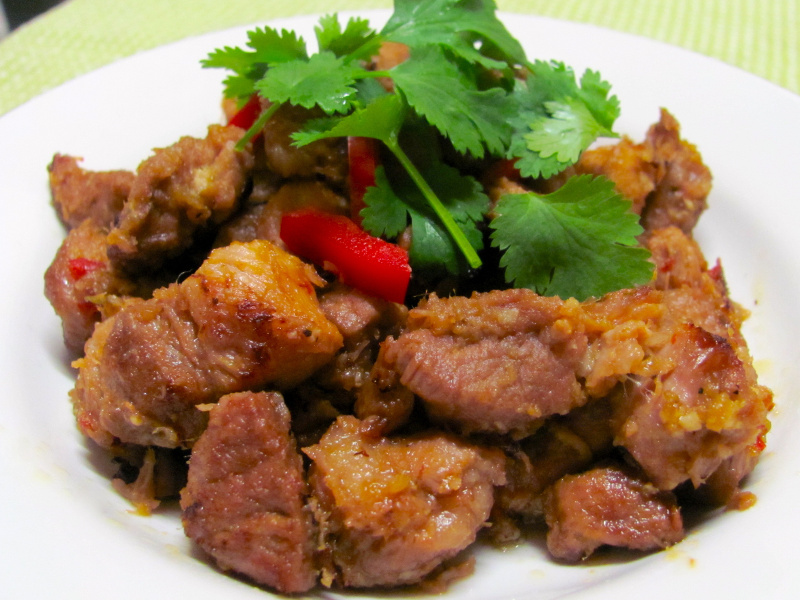

Haitian Griot

Description
Griots is a rich, flavorful dish and is one of Haiti's most popular, invariably served at parties and family gatherings. Cubes of pork are soaked in a sour orange marinade and then slow-roasted until tender. The tender morsels are then given a finally fry in oil until delectably caramelized. This recipe uses a mixture of orange and lime juice in place of the hard-to-find sour orange juice. Also spelled grillots, griyo, griyot or griot.
6 to 8 servings
Ingredients
- Pork shoulder, cubed -- 4 pounds
- Onion, thinly sliced -- 1
- Green or red bell pepper, thinly sliced -- 1
- Scotch bonnet peppers, chopped (optional) -- 1 or 2
- Shallots, thinly sliced -- 2 or 3
- Garlic, chopped -- 3 or 4 cloves
- Thyme -- 2 teaspoons
- Salt -- 2 teaspoons
- Pepper -- 1 teaspoon
- Oranges -- 2
- Limes -- 3
- Oil -- 1/4 cup
Steps
- Add the pork and all the other ingredients except the oil to a large, non-reactive bowl and mixt together well. Refrigerate for 4 to 24 hours to let the meat soak up the marinade.
- Oven to 375°F. Place the pork and its marinade into a large roasting pan and cover tightly with a lid or aluminum foil. Place in the oven and roast for 1 1/2 to 2 hours, or until the pork is tender.
- Remove the roasting pan from the oven. Remove any extra liquid in the pan, putting it into a saucepan, and set aside. Add the oil to the pan and stir it into the meat. Return the roasting pan to the oven and let the pork cook for 20 to 30 minutes more, stirring occasionally. Any liquid will evaporate away and the meat will begin to fry in the oil and brown.
- While the meat is frying in the oven, place the saucepan with the reserved liquid on the top of the stove and boil it down until it is well reduced and thickens. Remove the roasting pan from the oven and mix the reduced sauce into the browned pork. Serve hot with with sos ti-malice, banan peze and a side of pikliz.